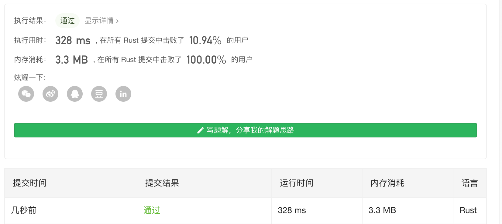
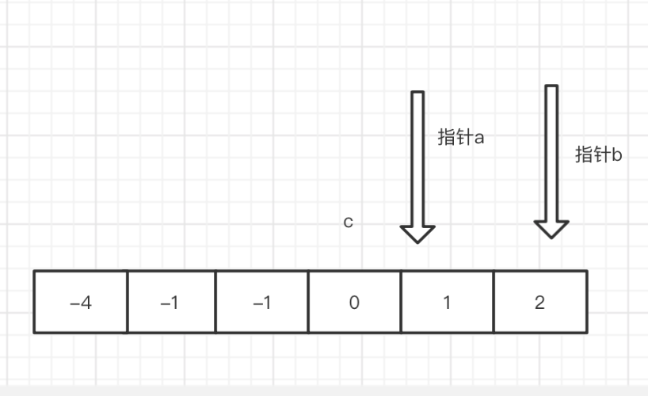
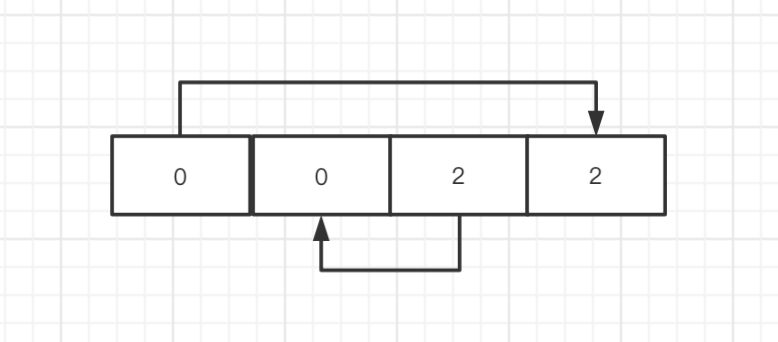

Leetcode 第15题 - 三数之和(medium)
给你一个包含 n 个整数的数组 nums，判断 nums 中是否存在三个元素 a，b，c ，使得 a + b + c = 0 ？请你找出所有满足条件且不重复的三元组。
注意：答案中不可以包含重复的三元组。
示例
给定数组 nums = [-1, 0, 1, 2, -1, -4]，
满足要求的三元组集合为： [ [-1, 0, 1], [-1, -1, 2] ]
解题思路
这道题目和求2树之和类似,多了一个数。那么最自然的想法 也是写算法中常用的的思维能不能把问题规模变小。
题目中 给出了注意事项 **答案中不可以包含重复的三元组。**那这是什么意思呢 ?
[-1, 0, 1, 2, -1, -4] 我们把解写成索引形式 ->
[0, 1, 2] 对应 -1 + 0 + 1 =0
[0, 3, 4] 对应 -1 + 2 + -1 =0
[1, 2, 4] 对应 0 + 1 + -1 = 0
但是你可以看到 其实 第1组 和 第3组只是数的位置不一样 里面的数字是一样的,题目就是想说明这一点,所以 我们在对得出结果后还要对相同的组进行去重。
a + b + c = 0 是不是和 2数之和很相似,如果稍微改动下 变成 a + b = -c ,不就变成了2数之和了吗,那么 我们只要一层for 循环 来遍历 不同的c 就好了。 [-1, 0, 1, 2, -1, -4] 我们可以把 数组里面 的每一个数 当做 c 然后再去找 a 和 b。
暴力解法
时间复杂度： $$O_{(n^{3})}$$
空间复杂度：$$O(1)$$
暴力解法 很简单 但是我们要注意的点
- 第一层循环i 从0 开始 第二层循环j 从i 开始 第三层循环m 从j 开始,为什么呢想像小时候的乘法口诀表 ?

- 如果数组中有重复的元素 比如上面的 -1 ,我们需要去下重,否则 就会有2个同一答案 比如 [-1, 0, 1] [0, 1, -1]
你可以看到 我们一般 就只需要背一般剩余一半,只不过是镜像反转了 (i)1* (j)2 和 (i)2*(j)1是一样的。
下面 我们先不考虑第二点,把最简单的 一个暴力算法写出可运行的结果。
//---->点击右上角 编辑调试代码 use std::collections::HashMap; pub fn three_sum(nums: Vec<i32>) -> Vec<Vec<i32>> { let mut res =vec![]; for i in 0..nums.len() { for j in i+1..nums.len() { for m in j+1..nums.len() { if nums[i] + nums[j] + nums[m] == 0{ let mut tmp =vec![]; tmp.push( nums[i]); tmp.push(nums[j]); tmp.push(nums[m]); res.push(tmp); } } } } res } fn main() { let mut a1 =vec![-1, 0, 1, 2, -1, -4]; println!("{:?}",three_sum(a1)); }
最后的结果 输出 :
[[-1, 0, 1], [-1, 2, -1], [0, 1, -1]]
我们可以在 循环前先对数组排序,然后每层都去判断前一个数字是否和当前相同 相同 就跳过。
use std::collections::HashMap; pub fn three_sum(nums: Vec<i32>) -> Vec<Vec<i32>> { let mut nums = nums; nums.sort(); let mut res =vec![]; let mut flag = None; for i in 0..nums.len() { //如果和前一个相同 就跳过 if { flag != None && flag == Some(nums[i])}{continue;} flag = Some(nums[i]); let mut flag1 = None; for j in i+1..nums.len() { //如果和前一个相同 就跳过 if flag1 != None && flag1 == Some(nums[j]) { continue } flag1 = Some(nums[j]); let mut flag2 = None; for m in j+1..nums.len() { //如果和前一个相同 就跳过 if flag2 != None && flag2 == Some(nums[m]) { continue } flag2 = Some(nums[m]); if nums[i] + nums[j] + nums[m] == 0{ let mut tmp =vec![]; tmp.push( nums[i]); tmp.push(nums[j]); tmp.push(nums[m]); res.push(tmp); } } } } res } fn main() { let mut a1 =vec![0, 0, 0, 0]; println!("{:?}",three_sum(a1)); let mut a1 =vec![-1, 0, 1, 2, -1, -4]; println!("{:?}",three_sum(a1)); }
于是我们 很高兴的去leetcode 提交答案,但是果然 它 就超时了,毕竟现在 复杂度是$O^{3}$级别的。
排序 + HashMap
a + b + c = 0 我们使 b + c = d 那么 a + d = 0 a = -d 能使 a 为 0 的 d 应该 只存在唯一一个。
但是 能使 b + c = d 的可能有很多解。
我们 循环是 先进行排序,把前一个和当前相同的 a 值过跳过, 因为 同一个 a 的出来的 是相同的 b 和 c 所以没有意义。
接下来 我们 满足 b + c = d 的解可能是有 多组的,同时 我们还要注意 一点 b + c 和 c + b 也是同一组解,所以遇到这种情况 我们也要过滤掉。我们还需要注意 当 a 被用掉后 b 和 c 也不能用 a 的值 ,
因为本质上 a + b + c =0 可以设 a =b 这样 就可以变成 b + a + c =0 这样 也是重复的解,只是位置换了。
我们 把 先前的 2数之和稍微改动下,就能使用了。
use std::collections::HashMap; pub fn three_sum(nums: Vec<i32>) -> Vec<Vec<i32>> { let mut i = 0; let mut nums = nums; //排序 nums.sort(); let mut flag = None; let mut res:Vec<Vec<i32>> =vec![]; while(i<nums.len()){ if flag != None && Some(nums[i]) == flag{i+=1;continue;} flag = Some(nums[i]); let mut map: HashMap<i32, usize> = HashMap::new(); let mut flag1:Option<i32> = None; for (j, v) in nums.iter().enumerate() { if j < i +1 {continue;} if flag1 != None && Some(*v) == flag1 {continue;} match map.get(v) { //匹配到 直接返回 Some(&index) => { res.push(vec![nums[i],nums[index], nums[j] ]); flag1 = Some(*v); } //匹配不到 把当前数对应的解b = c -a 插入 value _ => { map.insert(-nums[i] - v, j ); } } } i+=1; } res } fn main() { let mut a1 =vec![0, 0, 0, 0]; println!("{:?}",three_sum(a1)); let mut a1 =vec![-1, 0, 1, 2, -1, -4]; println!("{:?}",three_sum(a1)); }
最终 我们 靠自前面实现的2树相加 实现了,但是 现在时间复杂度 还是 接近$O^n$ ,效率还不是最高。
排序 + 双指针
前面 我们实现了 通过hashMap 实现了2数之和,但 执行时间 还是有点慢,下面 尝试用双指针来看看会不会有更好的性能。
首先明确的就是 双指针的思路 和 上面一种做法是一样的, a + b + c = 0 转换成 a + b = - c 然后定义2个指针,代表了 a 和 c 的取值,双指针的套路就是一般先要进行排序.然后 就是 就是一个while 左边小于右边就循环,
双指针 我们分别 指向一个左边的最小的数,和一个右边最大的数。

从图上我们可以观察处,
当a 指针 往 右移动 a + b 会变大
当 b 指针 往 左移 a + b 会变小
也就是说,如果 a + b < -c 你就 移动 指针a,如果 a + b > -c 你就移动 指针b,如果某一次移动 a 或 b后 正好等于了 - c,有点像 夹逼定理吧。
那么可以说 我们找到了那个数,并且 我们不能让指针 碰在一起,也就是 指针a 的索引 > 指针b 的索引,那么 如果我们不设限制的话 当指针 a 超过指针b 后 其实相当于 变成了 a = b 位置颠倒了, 会出现 1 + 3 和 3 + 1 这样本质是一样。
另外要提的一点是,如果 排序后有重复的数字 比如上图的 -1 和 -1 这样 会出现重复的答案 我们需要作以下判断,分完了 开始编写代码把。
我们先 搭了一个基本的框架
#![allow(unused_variables)] fn main() { pub fn three_sum(nums: Vec<i32>) -> Vec<Vec<i32>> { let mut nums = nums; //作下 排序 nums.sort(); //定义 c for pointer_c in 0..nums.len(){ //定义指针a 要比 c 大 let mut pointer_a= pointer_c + 1; //定义指针 b let mut pointer_b =nums.len() -1; //左边的指针小于右边的指针 while(pointer_a < pointer_b ){ } } vec![] } }
接下来我们填充下内容
主要 判断下 a + b > -c 和 a + b < -c 或者 a + b = -c 的几种情况。
#![allow(unused_variables)] fn main() { pub fn three_sum(nums: Vec<i32>) -> Vec<Vec<i32>> { let mut nums = nums; //作下 排序 nums.sort(); let mut res =vec![]; //定义 c for pointer_c in 0..nums.len(){ //定义指针a 要比 c 大 let mut pointer_a= pointer_c+1; //定义指针 b let mut pointer_b =nums.len() -1; //左边的指针小于右边的指针 while(pointer_a < pointer_b ){ //如果 a + b < -c 那么 往右移动a 指针 a + b 变大 if nums[pointer_a] + nums[pointer_b] < -nums[pointer_c] { pointer_a += 1; //如果 a + b > -c 那么 往左移动b 指针 a + b 变小 }else if nums[pointer_a] + nums[pointer_b] > -nums[pointer_c]{ pointer_b -= 1; //如果 a + b = -c 找到了 }else if nums[pointer_a] + nums[pointer_b] == -nums[pointer_c]{ res.push(vec![nums[pointer_a],nums[pointer_b],nums[pointer_c]]); } } } res } }
在 实现的过程中 我遗漏了一点分析,当 a + b = -c 是 能使 a + b = -c 的 a + b 的解可能是有多个的。当我们找到第一组后,该怎么 移动指针 继续寻找 后面可能的解呢? 无非 要么移动 a 要么移动 b 要么 a 和 b 都移动,仔细一想 a 唯一对应 一个 b 反过来 b 也是,也就是 a找到了它唯一的伴侣 b也找到了它唯一的伴侣,那么 他们就没必要在找小三了。那么 只要 a 和 b 的指针 + 1 即可。
我们 还需要 注意 一点 就是 c 最大 能取到 的位置,上图 是c 能取到 的最大位置了 如果再往右 a 和b 的指针就要重合 了 那就没有意义了。所以 我们判断下 c 最大的index 是 len() -2 。
pub fn three_sum(nums: Vec<i32>) -> Vec<Vec<i32>> { let mut nums = nums; //作下 排序 nums.sort(); let mut res =vec![]; //定义 c for pointer_c in 0..nums.len() -2{ //c的最大界限 nums.len() -2 左闭右开 //定义指针a 要比 c 大 let mut pointer_a= pointer_c + 1; //定义指针 b let mut pointer_b =nums.len() -1; //左边的指针小于右边的指针 while(pointer_a < pointer_b ){ //如果 a + b < -c 那么 右移动a 指针 a + b 变大 if nums[pointer_a] + nums[pointer_b] < -nums[pointer_c] { pointer_a += 1; //如果 a + b > -c 那么 左移动b 指针 a + b 变小 }else if nums[pointer_a] + nums[pointer_b] > -nums[pointer_c]{ pointer_b -= 1; //如果 a + b = -c 找到了 }else if nums[pointer_a] + nums[pointer_b] == -nums[pointer_c]{ res.push(vec![nums[pointer_a],nums[pointer_b],nums[pointer_c]]); pointer_a += 1; pointer_b -= 1; } } } res } fn main() { let mut a1 =vec![-1, 0, 1, 2, -1, -4]; println!("{:?}",three_sum(a1)); // let mut a1 =vec![-1, 0, 1, 2, -1, -4]; // println!("{:?}",three_sum(a1)); }
运行下,上面代码来测试下吧!
当你运行上面代码,发现问题了吧, 有重复的 [0,1,-1] 上面我们提过的,向量元素 如果重复了 比如 上面数组 -1 -1 就重复了, 那就要跳过。
那么 我们 每次判断下,上一个元素是否相同,相同就跳过就好了 代码很简单,我们拿索引和上一个索引做下比较就好啦,但要注意 索引 0 要排除哦。
#![allow(unused_variables)] fn main() { if pointer_c >0 && nums[pointer_c] == nums[pointer_c -1] { continue; } }
到这里 我本以为 我的算法 就完美了 但是 。。。
没错 在leetcode 中
#![allow(unused_variables)] fn main() { let mut a1 =vec![-2,0,0,2,2]; }
我疏忽了 一点 就是 不只是 c 要判断 是否 相邻的有 重复跳过, b 也需要 判断 是否相邻跳过。
否则的话 当我们 确定了 c = -2 那么 a 和 b 在 [0,0,2,2]里面选择 那么 就会产生 2对 一样的,其实了解了 这个原因 和上面一样 每次 都记录下上一组的值,做下 判断就好了。
我们 每次找到一组的时候 把结果保存下,再下一次找到的时候对比下 值是否相同即可。
#![allow(unused_variables)] fn main() { else if nums[pointer_a] + nums[pointer_b] == -nums[pointer_c]{ //比较上一组 的 a 是否和 这一次的相等 相等就跳过。 if tag1 == Some(nums[pointer_a]) { pointer_a += 1;pointer_b -= 1; continue;} //每次保存下a的值 tag1 = Some(nums[pointer_a]); .... } }
完整代码
pub fn three_sum(nums: Vec<i32>) -> Vec<Vec<i32>> { //为了对付 leetcode 给的 比如像 [] [0] [1,2] 这样的没用数据 if nums.len() < 3 { return vec![];} let mut nums = nums; //作下 排序 nums.sort(); let mut res =vec![]; //定义 c for pointer_c in 0..nums.len() -2{ let mut tag1 = None; if pointer_c >0 && nums[pointer_c] == nums[pointer_c -1] { continue; } //定义指针a 要比 c 大 let mut pointer_a= pointer_c + 1; //定义指针 b let mut pointer_b =nums.len() -1; //左边的指针小于右边的指针 while(pointer_a < pointer_b ){ //如果 a + b < -c 那么 右移动a 指针 a + b 变大 if nums[pointer_a] + nums[pointer_b] < -nums[pointer_c] { pointer_a += 1; //如果 a + b > -c 那么 左移动b 指针 a + b 变小 }else if nums[pointer_a] + nums[pointer_b] > -nums[pointer_c]{ pointer_b -= 1; //如果 a + b = -c 找到了 }else if nums[pointer_a] + nums[pointer_b] == -nums[pointer_c]{ if tag1 == Some(nums[pointer_a]) { pointer_a += 1;pointer_b -= 1; continue;} tag1 = Some(nums[pointer_a]); res.push(vec![nums[pointer_c],nums[pointer_a],nums[pointer_b]]); pointer_a += 1; pointer_b -= 1; } } } res } fn main() { let mut a1 =vec![-2,0,0,2,2]; println!("{:?}",three_sum(a1)); let mut a1 =vec![-1, 0, 1, 2, -1, -4]; println!("{:?}",three_sum(a1)); let mut a1 =vec![0, 0, 0, 0, 0, 0]; println!("{:?}",three_sum(a1)); }

第一次运行的时候 只超越了 30% 多,但 第二次运行后超越了 73% 真是搞不懂,我们算法 已经写的非常简洁了,如果还有什么地方可以优化 我感觉 那就只能在 排序那里优化了。